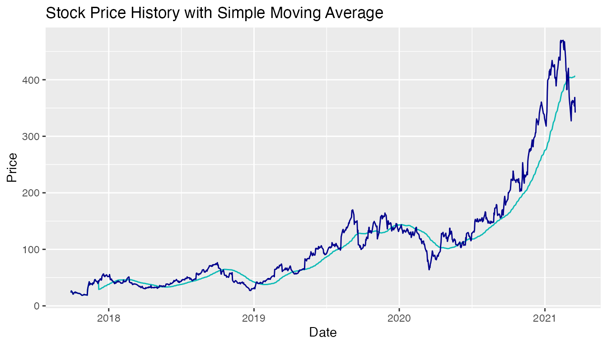
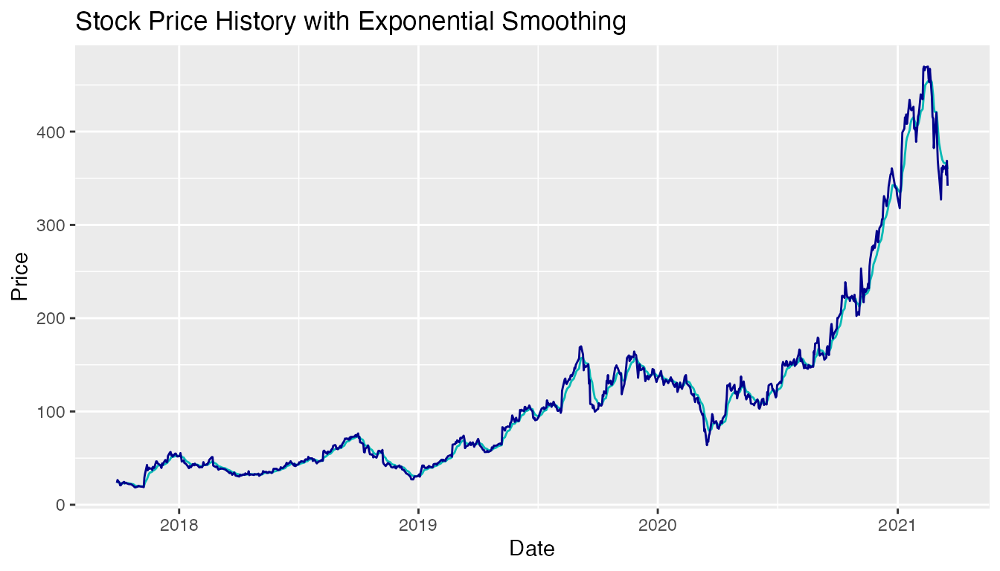

stockAnalyzer-vignette.RmdWelcome! 🎉 Bienvenue! 🎈 Välkommen 👋 Here is a tour of the Stock Analyzer package!
library(stockAnalyzer)Investments in the stock market requires not only knowledge about the listed companies, but also basic summary statistics and modellings of individual stock prices. This R package provides basic time series modelling functionalities to analyze historical stock prices. Given the time-series stock price data, this package provides key summary statistics, applies moving average and exponential smoothing models to the data, and visualizes simple moving average and exponential smoothing fits.
quantmod libraryThis package is able to work with quantmod library, which can load well-formated stock price data.
library(quantmod)
#> Loading required package: xts
#> Loading required package: zoo
#>
#> Attaching package: 'zoo'
#> The following objects are masked from 'package:base':
#>
#> as.Date, as.Date.numeric
#> Loading required package: TTR
#> Registered S3 method overwritten by 'quantmod':
#> method from
#> as.zoo.data.frame zoosummaryStats applicationLet’s say that you are interested in a specific public company but have no idea about its performance and statistics. The summaryStats is here is solve the problem. It calculates summary statistics including average price, minimum price, maximum price, volatility, stock return percentage based on the daily historical stock prices. You have the flexibility to specify the stock of interest, and the exact measurement in the data that you prefer to analyze on.
For example, you are interested in Roku Inc. (an American public company list on Nasdaq engaging the provision of streaming platform for TVs). The ticker symbol to represent Roku Inc. is “ROKU”, and you can specify it in getSymbols and then simply put ROKU (xts time seris object) in the summaryStats function. It will provide you with an xts time series object of summary statistics.
If you are only interested in ROKU’s closing price summary statistics, you are able to add measurements = "ROKU.Close" in the summaryStats() function as an optional argument.
getSymbols("ROKU")
#> [1] "ROKU"
summaryStats(ROKU)
#> # A tibble: 6 x 6
#> measurement mean min max volatility return
#> <chr> <dbl> <dbl> <dbl> <dbl> <dbl>
#> 1 ROKU.Open 115. 15.8 477. 97.2 21.7
#> 2 ROKU.High 119. 19.3 487. 99.6 14.4
#> 3 ROKU.Low 112. 15.8 466. 94.5 20.7
#> 4 ROKU.Close 115. 18.6 470. 97.2 13.6
#> 5 ROKU.Volume 10243980. 523900 64857700 8225067. -0.914
#> 6 ROKU.Adjusted 115. 18.6 470. 97.2 13.6
summaryStats(ROKU, measurements = "ROKU.Close")
#> # A tibble: 1 x 6
#> measurement mean min max volatility return
#> <chr> <dbl> <dbl> <dbl> <dbl> <dbl>
#> 1 ROKU.Close 115. 18.6 470. 97.2 13.6movingAverage applicationNow you are intrigued about these numbers and want a deeper dive in understanding the stock performance. movingAverage function is here to help, it applies the simple moving average to the stock price and returns an xts time series object with fitted values. You are able to specify the length of moving average window (unit: days).
You may want to take a look at 50-day simple moving average of ROKU. You can follow the following format to set ROKU as the first argument, 50 as the second argument, and put ROKU in colnames().
tail(movingAverage(ROKU, 50, paste("movingAverage", colnames(ROKU), sep="_")))
#> movingAverage_ROKU.Open movingAverage_ROKU.High
#> 2021-03-11 405.3362 415.8382
#> 2021-03-12 405.5398 416.1690
#> 2021-03-15 405.9360 416.5492
#> 2021-03-16 406.4760 417.1430
#> 2021-03-17 406.6014 417.7628
#> 2021-03-18 407.3660 418.2822
#> movingAverage_ROKU.Low movingAverage_ROKU.Close
#> 2021-03-11 392.7682 404.0896
#> 2021-03-12 393.0500 404.4974
#> 2021-03-15 393.4612 404.9810
#> 2021-03-16 393.8154 405.4122
#> 2021-03-17 394.3120 406.4284
#> 2021-03-18 394.7296 406.5638
#> movingAverage_ROKU.Volume movingAverage_ROKU.Adjusted
#> 2021-03-11 4711536 404.0896
#> 2021-03-12 4693086 404.4974
#> 2021-03-15 4676012 404.9810
#> 2021-03-16 4697966 405.4122
#> 2021-03-17 4666680 406.4284
#> 2021-03-18 4643772 406.5638exponentialSmoothing applicationSimple moving average is too simple? No problem, exponentialSmoothing function is here to provide some more insights on stock prices. This function performs exponential smoothing on historical stock price time series data. You are able to specify the alpha parameter between 0 and 1 for smoothing strength. The closer alpha is to 1, the less prior data points would be taken into account for the smoothing. In practice, alpha is usually set to a value ranging from 0.1 to 0.3.
For the ROKU stock example, you can set ROKU as first argument, put ROKU in colnames(), 0.2 as the last argument. 0.2 here is the alpha.
tail(exponentialSmoothing(ROKU, paste("expsmoothing", colnames(ROKU), sep="_"), 0.2))
#> expsmoothing_ROKU.Open expsmoothing_ROKU.High expsmoothing_ROKU.Low
#> 2021-03-11 375.8268 383.3116 357.7507
#> 2021-03-12 370.6894 378.9453 355.4286
#> 2021-03-15 368.3475 375.8462 355.1549
#> 2021-03-16 367.5780 374.5970 353.8299
#> 2021-03-17 363.3124 373.8756 351.3219
#> 2021-03-18 362.4559 371.3705 349.3335
#> expsmoothing_ROKU.Close expsmoothing_ROKU.Volume
#> 2021-03-11 368.3623 5172341
#> 2021-03-12 366.6818 4681192
#> 2021-03-15 365.9295 4217274
#> 2021-03-16 363.4596 4010639
#> 2021-03-17 364.5097 3879591
#> 2021-03-18 359.9977 3775893
#> expsmoothing_ROKU.Adjusted
#> 2021-03-11 368.3623
#> 2021-03-12 366.6818
#> 2021-03-15 365.9295
#> 2021-03-16 363.4596
#> 2021-03-17 364.5097
#> 2021-03-18 359.9977visMovingAverage applicationIf you want to visualize the stock price trend, there are two visualization tools in the Stock Analyzer package. visMovingAverge function would create a line plot showing the comparison of raw historical prices and simple moving average. You are able to customize the stock in the first argument, moving average window (unit: days) in the second argument, and the name of the column to be used in moving average calculation in the third argument.
Below is an example of ROKU’s closing price plot with 50-day simple moving average. The dark blue line is the line of historical prices and the Tiffany blue (lighter blue) line is the simple moving average.
visMovingAverage(ROKU, 50, 'ROKU.Close')
visExpSmoothing applicationHow does exponential smoothing fit comparing to moving average approach? visExpSmoothing function creates a similar line plot with comparison of historical stock prices and exponentially smoothed stock prices. You are able to customize the stock in the first argument, alpha parameter in the second argument, and the name of the column to be used in exponential smoothing calculation in the third argument.
Below is an example of ROKU’s closing price plot with exponential smoothing with alpha 0.2. The dark blue line is the line of historical prices and the Tiffany blue (lighter blue) line is the exponentially smoothed line. Pretty cool, exponential smoothing has a better fit than simple moving average approach in general.
visExpSmoothing(ROKU, 0.2, 'ROKU.Close')